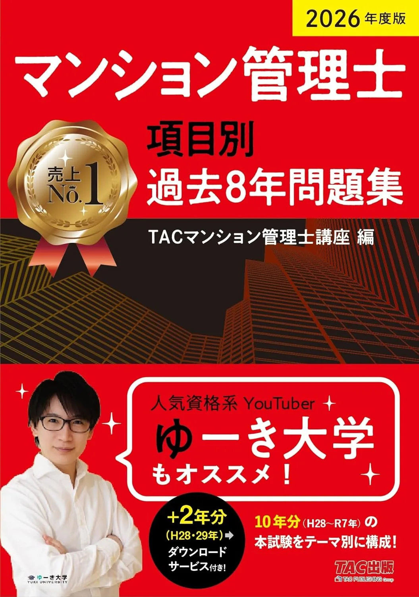
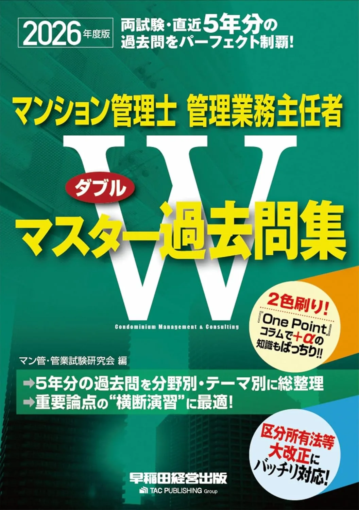

マンション管理士のおすすめ問題集3選【過去8年・分野別2026】
テキスト第1周後の演習量確保に向け、2026年度版の問題集3冊を比較します。本番は11/29（日）13:00〜15:00・7分野50問・120分です。執筆時点（2026-06-12）のAmazon税込参考は、TAC過去8年2,860円・LEC分野別2,750円・Wマスター過去問4,400円。購入前に各販売ページで最新の価格・在庫・版を確認してください。
この記事の信頼性について
| 執筆 | マン管マスター編集部（資格学習サイトの編集チーム） |
|---|---|
| 確認 | 公式情報確認担当（公開前に一次情報との照合を行う担当者） |
| 事実確認日 | 2026-06-25 |
| 主な参照元 |
19月切替：50問形式の3基準
問題集は、テキストで7分野の輪郭を掴んだあとの演習量確保が主目的です。購入前にマン管センター要項で50問120分・合格基準を確認し、次の3点で比較してください。たとえば6/14（日）開始なら、7〜8月はテキスト中心、9月以降に問題集メインへ切り替える計画が定番です。
| 観点 | 確認内容 |
|---|---|
| 収録形式 | 項目別過去8年か、分野別過去問か、W受験一体型か |
| 時間練習 | 50問120分の通し演習に近い形式か |
| 解説の戻り方 | 誤答から条文·用語へ戻れる解説量があるか |
3冊同時購入より、テキストの出版社系列に合わせて1冊に絞る方が、48％未満分野の対策では迷いが少ないです。
おすすめ問題集3選（比較）
価格・在庫は執筆時点（2026-06-12）のAmazon税込参考です。購入前に販売ページで最新版を確認してください。
| 順位 | 商品名 | 価格（税込参考） | ページ数 | 向いている人 |
|---|---|---|---|---|
| 1 | 2026年度版 マンション管理士 項目別過去8年問題集 | ¥2,860 | 872 | TACテキストとセットで過去8年分を解きたい人 |
| 2 | 2026年版 出る順 マンション管理士 分野別過去問題集 | ¥2,750 | 874 | LEC出る順テキストとセットで過去問演習をしたい人 |
| 3 | 2026年度版 マンション管理士・管理業務主任者 Wマスター過去問集 | ¥4,400 | 1028 | Wマスターテキスト読了後に過去問メイン1冊を探している人 |

2026年度版 マンション管理士 項目別過去8年問題集
- 項目別で弱点分野の演習に向く
- TAC一問一答・速習テキストと組み合わせやすい
- 本試験形式の演習量確保に有効

2026年版 出る順 マンション管理士 分野別過去問題集
- 出る順テキストと縦串が明確
- 分野別に復習しやすい解説付き
- TAC過去問との使い分けがしやすい

2026年度版 マンション管理士・管理業務主任者 Wマスター過去問集
- Wマスターテキストとセットの定番過去問
- マン管・管理業務主任者のW受験向け演習量
- 解説付きで復習サイクルを組み立てやすい
2テキスト出版社別：1冊に絞る組み合わせ
比較表は価格だけでなく「どの演習サイクルに乗せるか」で読むのがポイントです。
| 組み合わせ | テキスト | 問題集 |
|---|---|---|
| TAC系 | はじめの一歩·速習 | 項目別過去8年 |
| LEC系 | 出る順テキスト | 分野別過去問題集 |
| 早稲田系 | Wマスターテキスト | Wマスター過去問集 |
おすすめテキスト3選で決めた1冊と縦串を揃えると、章読了→同分野20問の接続がスムーズです。マン管マスターの分野別演習は無料で現在地把握に使えるため、問題集は「通し50問の追加」か「過去8年の解説読み込み」かの役割で1冊選ぶとコスト対効果が高いです。11月以降は新規購入を抑え、解き直しに時間を回してください。
31位：TAC過去8年（項目別で弱点分野を厚くする）
「2026年度版 マンション管理士 項目別過去8年問題集」（TAC出版・872ページ・Amazon税込参考2,860円）は、項目別に過去8年分を解き、弱点分野の演習量を確保しやすい構成です。TACのはじめの一歩·速習テキストと章立ての相性がよく、W受験でもマン管パートの演習に向きます。向いている人：TACテキストを主役にしている人、管理組合法など特定分野を月40問で厚くしたい人。たとえば9/6（土）〜10/4（土）の4週で「管理組合項目20問/週」を固定し、48％未満が出た週は翌週+10問、が定番サイクルです。注意点：50問通しの時間配分練習は9月下旬に別途1回入れる必要があります。通し演習は年度別過去問の手順と併用してください。
42位・3位：LEC分野別とWマスター過去問
「2026年版 出る順 マンション管理士 分野別過去問題集」（LEC・874ページ・Amazon税込参考2,750円）は、出る順テキストと縦串で分野別復習に向きます。論点整理後に過去問へ進みたい人、7分野を一覧で回したい人向けです。2026年度版 マンション管理士·管理業務主任者 Wマスター過去問集（早稲田経営出版・1,028ページ・Amazon税込参考4,400円）は、Wマスターテキスト読了後のメイン過去問1冊として定番です。解説が厚く、W受験の演習量を1冊で確保しやすいのが強みです。
- LECとWマスターの使い分け：出る順テキスト派ならLEC過去問
- Wマスターテキスト派ならWマスター過去問
- と出版社で1択に絞るのが安全
価格が最も高いWマスター過去問は、8月末までにテキスト80％完走してから購入する判断もあります。
5通し50問→3日・7日後解き直しループ
問題集演習は「解いた量」より「解き直しで直せた量」で合格判断します。定番ループは次のとおりです。
| 段 | 作業 |
|---|---|
| 1 | 50問120分通し（記録用紙に分野別正答数） |
| 2 | 3日後に誤答のみ解き直し |
| 3 | 7日後に言い換え肢でも再確認 |
具体例として9/28（月）13:00〜15:00に通し50問→管理組合12問中5問（42％）→10/1（木）誤答7問→10/5（月）同分野10問追加、が1サイクルです。48％未満の分野が2つ出た週は、週10時間の70％をその分野の問題集解き直しに充ててください。2回連続正解でも解説を読まずに選んだ問題は、三回目も解き直し対象にします。マンション管理士試験の合格点と得点の見方で合格ラインの読み方も併せて確認してください。
6前半テキスト・後半問題集の2冊構成
独学の最小構成は「テキスト1冊＋問題集1冊」です。
- 6〜8月はテキスト第1周
- 9〜10月は問題集中心
- 11月は通し演習と解き直し
- という2段階が定番
一例として6/14（日）におすすめテキスト3選でテキスト決定→8/31（日）第1周完了→9/7（日）からTAC過去8年の管理組合パート開始、の順です。テキストと問題集の出版社を揃えると、章と過去問項目の対応づけが楽になります。速習·一問一答が必要になった段階でおすすめ一問一答・速習を検討し、11月以降は新規教材追加を抑えて解き直しに集中してください。
7購入前：2026年度版と演習計画
購入前に次を確認してください。1. Amazon販売ページで税込価格·在庫·2026年度版表記2. メインテキストと同系列か（TAC·LEC·早稲田）3. 9月開始なら11/29までに通し50問を最低4回入れられるか初学者向け学習計画で週10時間×25週を先にカレンダー固定し、問題集は「9月1冊購入・11月追加なし」を原則にすると教材コストを抑えられます。価格は変動するため、購入の直前に必ず販売ページで再確認してください。
8よくある質問
過去問だけで合格できますか？
管理業務主任者向け過去問は別途必要ですか？
問題集は何冊必要ですか？
記事の基本情報
| ジャンル | 独学対策 |
|---|---|
| タグ | 独学 / 参考書 |
公式情報の確認
公式情報の確認：マンション管理士試験の最新情報は、公益財団法人マンション管理センター（公式）などの公式情報を必ず確認してください。本人に割り当てられた試験会場は受験票の表記が正本です。